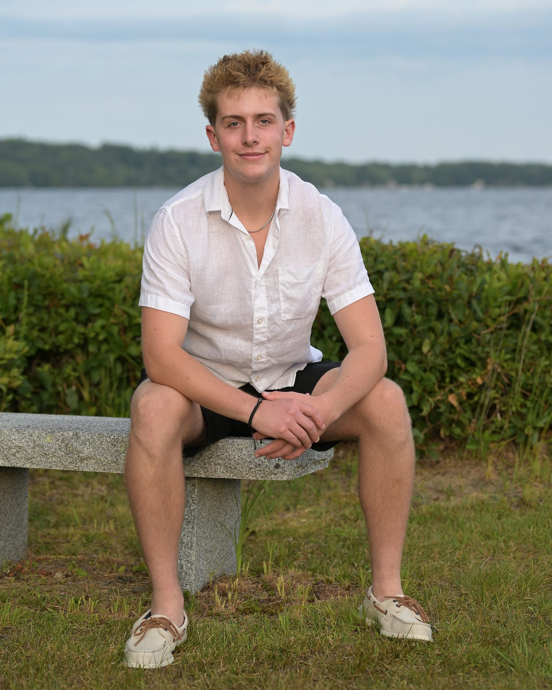
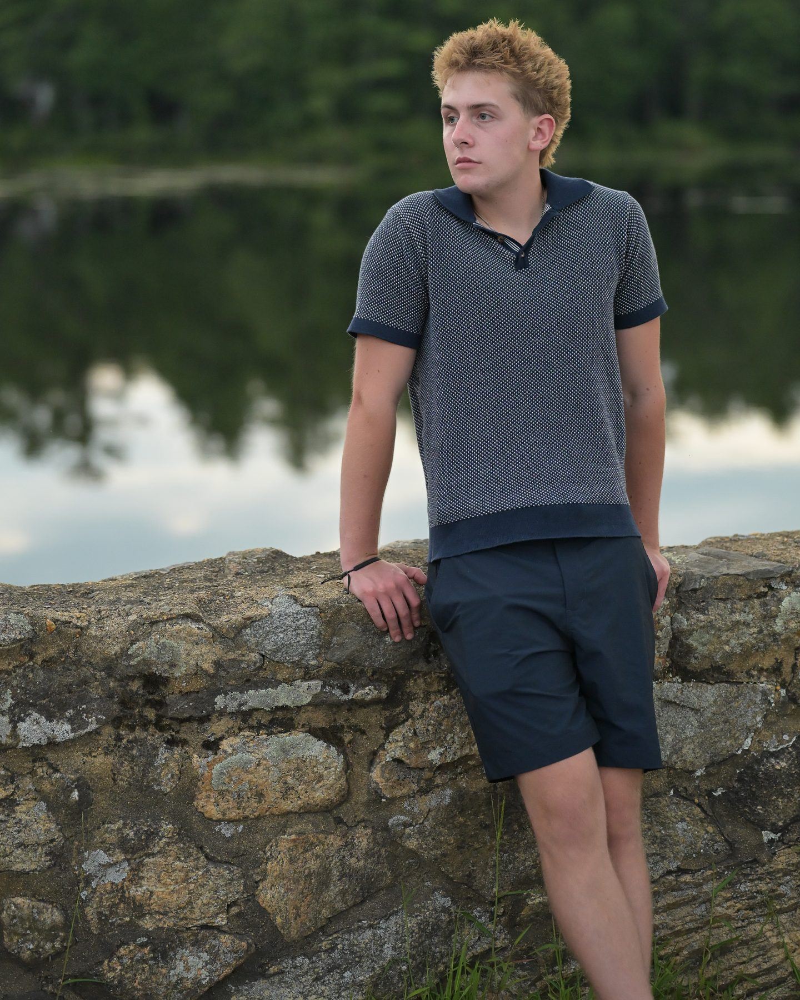
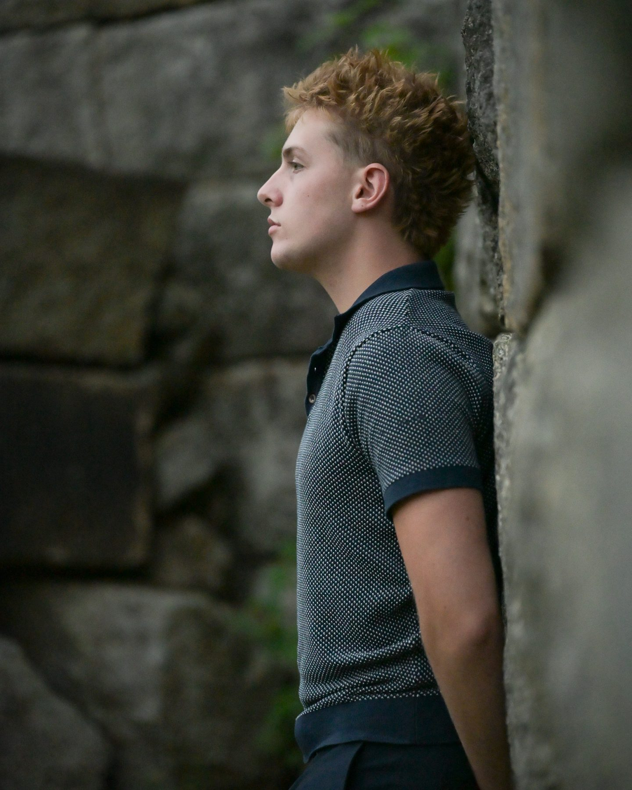
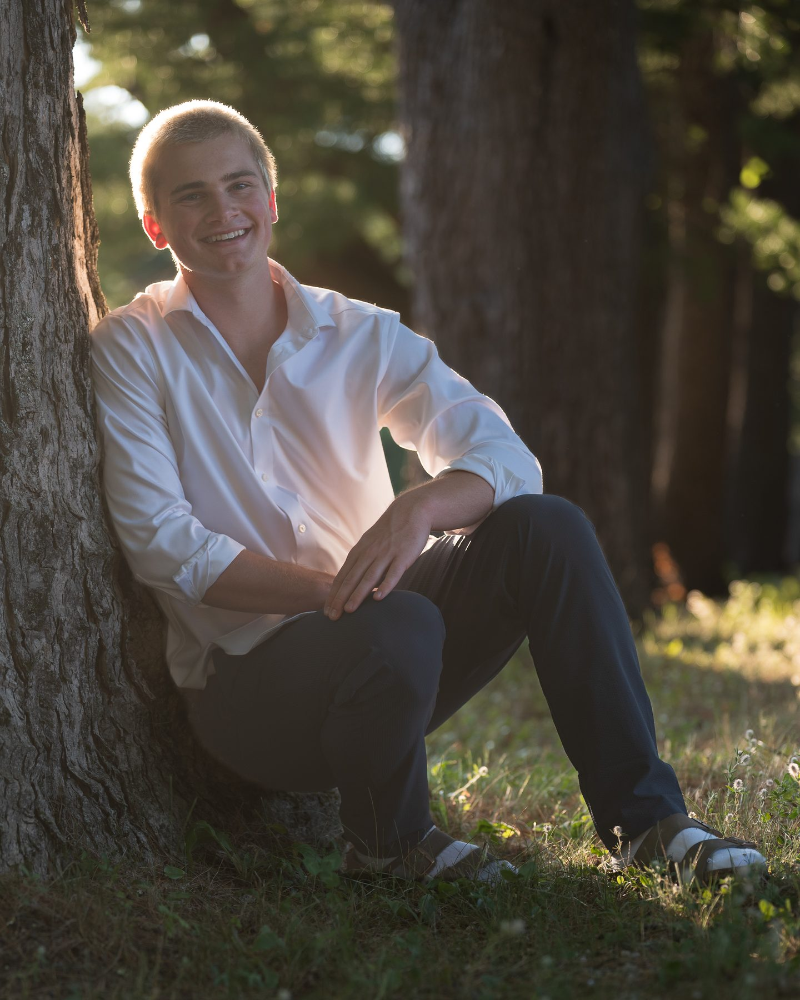
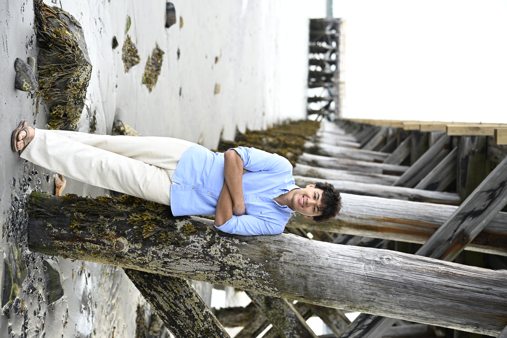
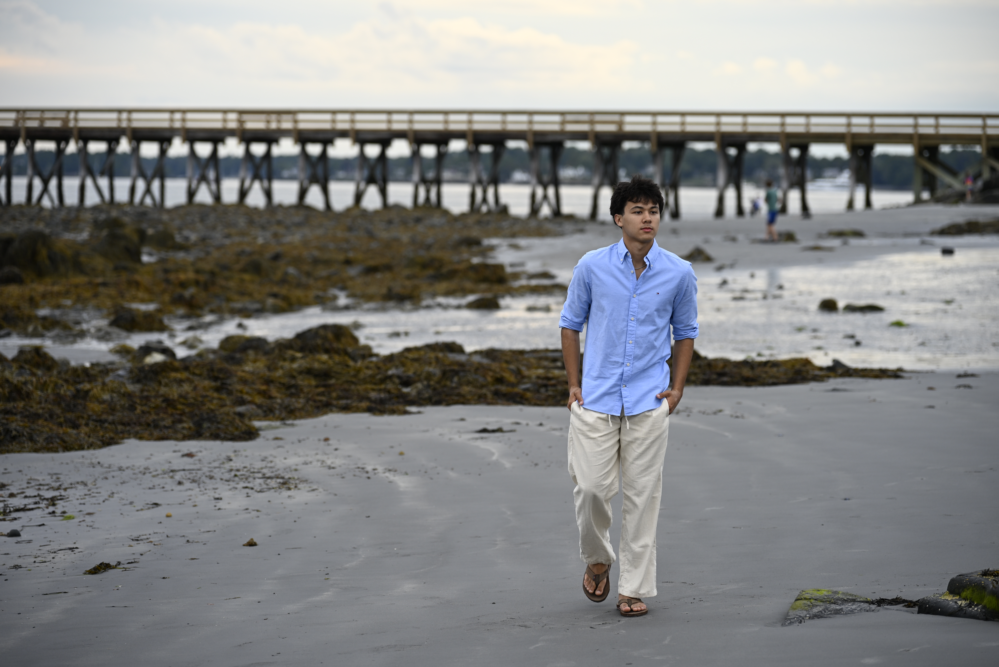
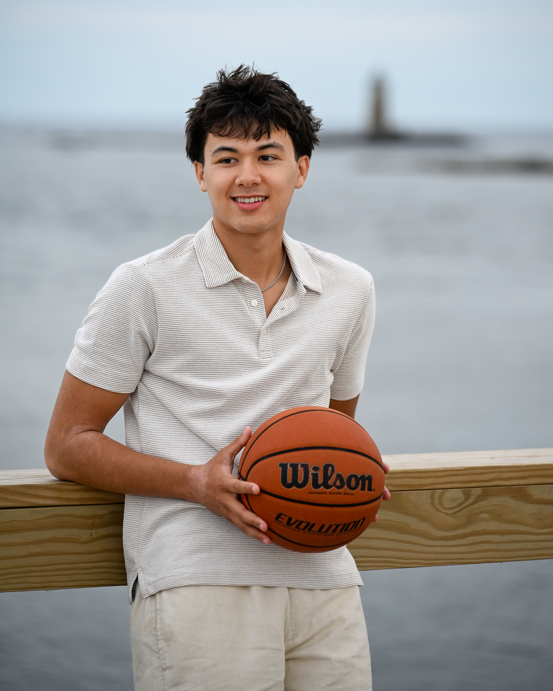
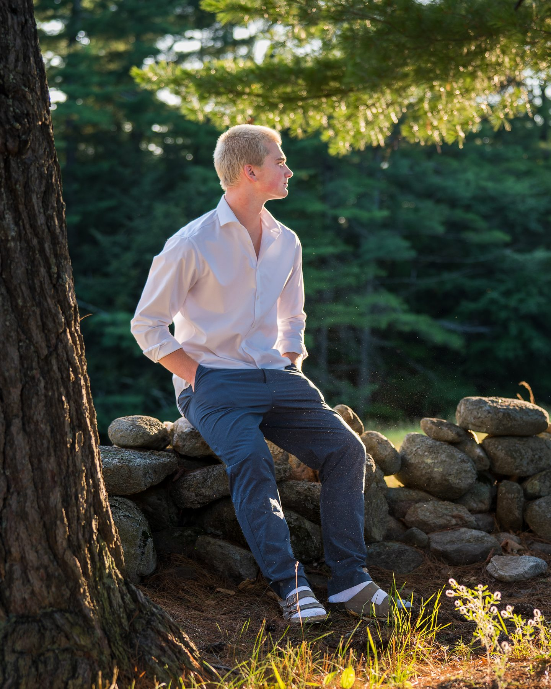

"Senior pictures with Rob is 100% the best choice! He was prepared to create a comfortable experience and he picked the best locations for the not-so-great weather. Rob made the process of scheduling and selecting photos simple! He shocked us with his remarkable turnaround time on the final edits!"
Senior Portraits Across New Hampshire
Relaxed sessions, real personality, and photos you'll actually want to share.
Senior year only happens once, so every session is built around you: your style, your interests, and the places that feel like home. Here are some recent seniors, outdoors, on the water, and in their element, with classic yearbook looks alongside creative portraits you'll be proud of for years to come.









Bring What You Love
Whether it's a sport, an instrument, your art, your truck, or your dog, the things you love make your portraits uniquely yours. Athletes are a specialty of mine: I've spent years on the sidelines photographing high school sports, so I know how to make you look as confident as you feel in the game. Not an athlete? No problem. We'll build your session around whatever makes you, you.
See my sports work →How It Works
From first message to final gallery, you'll always know what's next.

Book & plan
Pick your package and date, and reserve it with a $50 retainer. Then we'll talk about your style, locations, outfits, and any yearbook deadlines.
Prep made simple
I'll send you a simple guide on what to wear and what to bring. Sports gear, instruments, a favorite car or a dog are all welcome if they're part of your story.
A session with plenty of variety
We'll try different backdrops, poses, and angles to create a range of looks. After the session, I'll review the images and prepare your proof gallery with light cropping and straightening.
Review your proof gallery
Your watermarked gallery will include 40+ images for a Mini session and up to 60+ for the largest package.
Choose your favorites
Use the gallery's heart feature to select the number of images included in your package. I'll be notified when you've finished choosing.
Professionally finished and ready to download
I'll fully edit your selected images and add them to your final gallery, typically within 1–2 weeks. You can download the finished photos without watermarks and print them using the included print release.
Senior Portrait Packages
Every session includes a private online gallery, professional editing, and a print release.
- 30-minute session
- 1 outfit, 1 location
- Choose 7 favorites from 40+ proofs
- Digital gallery & print release
- 45-minute session
- 2 outfit changes, 1 location
- Choose 15 favorites from 50+ proofs
- Digital gallery & print release
Most Popular
Premium Session
Best for: the full senior experience, with multiple looks, locations and gear.
$
350
Book Your Session
- 90-minute session
- 3 outfit changes, 2 locations
- Choose 25 favorites from 60+ proofs
- Digital gallery & print release
Add-ons: Print packages from $60 · Extra outfit or location +$50 · Rush editing (72-hour gallery) +$75
A $50 retainer reserves your date and goes toward your session. Travel within 25 miles of Strafford, NH is included. See full package details.
What Senior Families Say
"I can't say enough great things about Rob Mulligan at 603 In Focus!!! He has been photographing Colby and his teammates for the past few years. He is so committed to these kids, their successes, and of course making them look their best. If you are looking for senior pictures, you won't be disappointed."
"Rob has captured hundreds of amazing images of my son playing sports. Working with Rob to capture my son's senior photos was stress-free and fun."
Where I Photograph
I'm based in Strafford, NH and photograph seniors from Coe-Brown Northwood Academy, Dover High School, Oyster River High School, and Rochester High School, along with families from Northwood, Strafford, Nottingham, Barrington, Dover, Durham, and Rochester. Favorite spots include Bow Lake, Stonehouse Pond, Hampton Beach, and downtown Portsmouth. Want something different? I'm happy to travel, like this senior session on the coast at Fort Foster in Kittery, Maine.
Was the drive to Maine worth it? Read the Fort Foster session →
Senior Session FAQ
When should we book senior portraits?
Earlier than most people think. Many schools have yearbook photo deadlines in early fall (some as early as October 1), so the best time to shoot is late spring through summer of junior-to-senior year. Book a month or two ahead for the best choice of dates, and tell me your school's deadline when you book.
What should I wear?
Bring outfits that feel like you: one classic look, one casual, and one that shows your personality. Solid colors and simple patterns photograph best. You'll get a full prep guide after booking.
Can I bring sports gear or props?
Absolutely. Jerseys, balls, sticks, instruments, and letterman jackets all make the photos more personal. Many of my seniors are athletes, and I love making these shots look great.
What happens if the weather doesn't cooperate?
[YOUR WEATHER/RESCHEDULE POLICY: copy the answer from the homepage FAQ]
How do I get my yearbook photo?
Your gallery includes high-resolution downloads you can submit directly. Check your school's yearbook requirements (size, orientation, deadline) and send them to me before your session so we plan for it.
How do I reserve my date?
Choose a package and book online. A $50 retainer holds your date and goes toward your session.
Let's Plan Your Senior Session
Tell me your school, your timeline, and what you're hoping for. I'll take it from there.